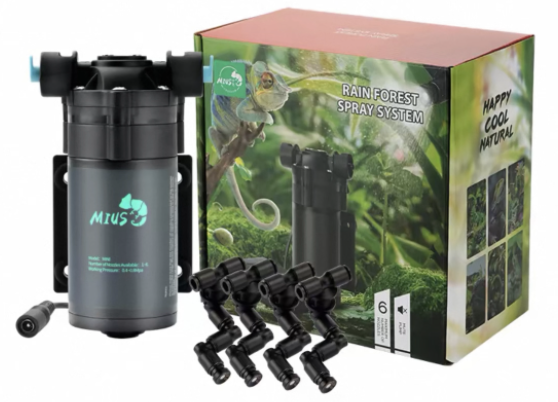
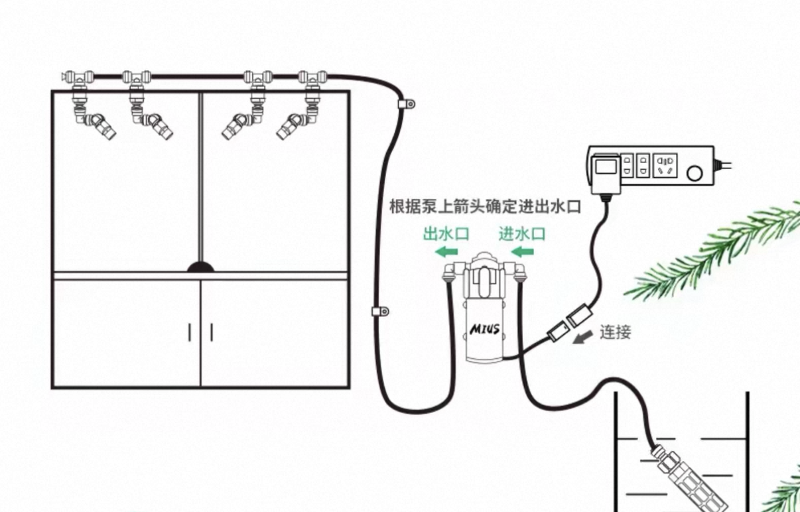
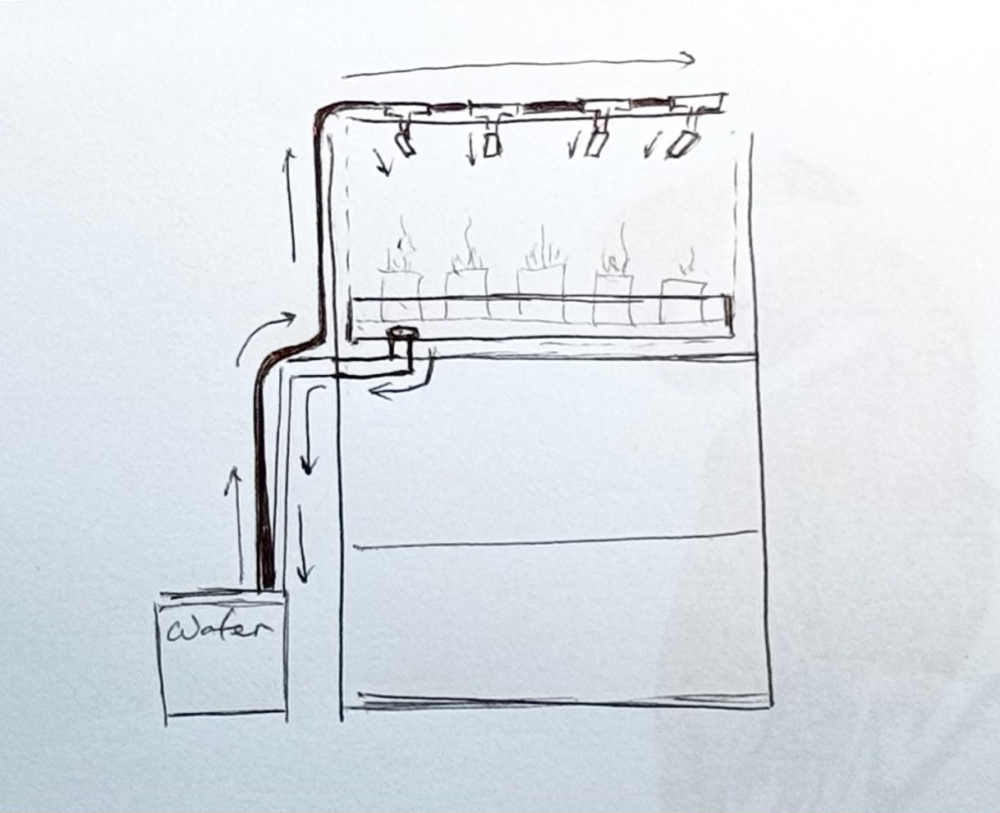

For the misting system, I chose a compact and well-designed product that offers great value for money and is also student-friendly. According to the product description, it is equipped with micron-level nozzles, which produce a fine mist rather than strong water droplets. This makes the spray gentle and unlikely to damage plant leaves. In addition, the device operates quietly, making it suitable for use in an indoor greenhouse environment.
This is the working diagram of the misting system provided on the product’s official website. The pump head, which contains a filtration material, draws water from the reservoir bucket. The pump then pushes the water into the tubing installed above the misting system.
Since the pump is connected to a timer plug, it will automatically pump water according to the preset schedule, allowing the misting system to operate at regular intervals.


This is the water circulation diagram of my DIY greenhouse. The position of the pump is not shown here, so please refer to the diagram above for details. In order to save water, I placed a larger tray underneath the two trays that hold the plants.
A 1 cm hole was drilled at the bottom of this tray, and a metal tea-tray drainage fitting was used to connect a pipe. The excess water is then directed back into the reservoir bucket, allowing it to be reused for the next watering cycle.